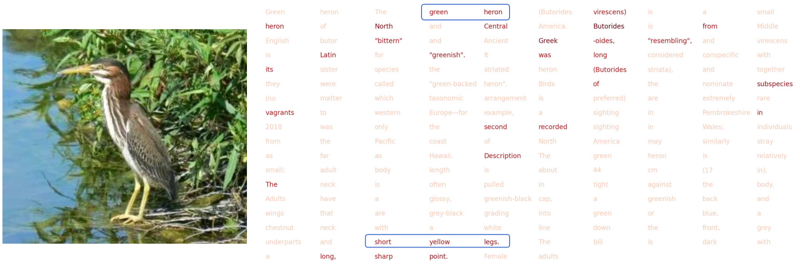
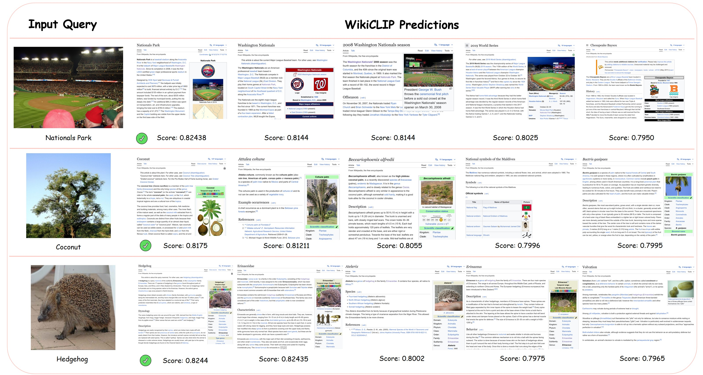
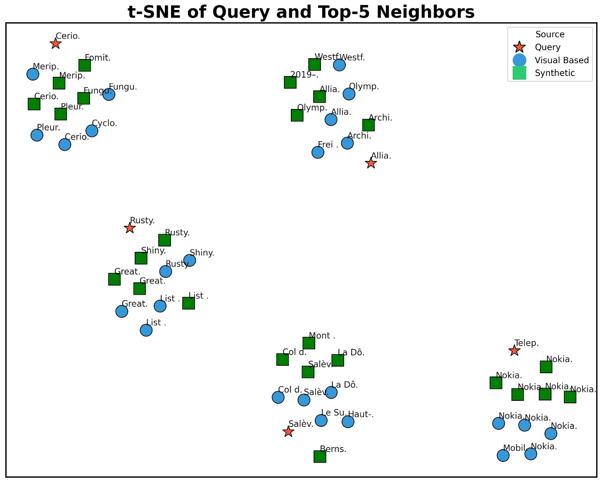
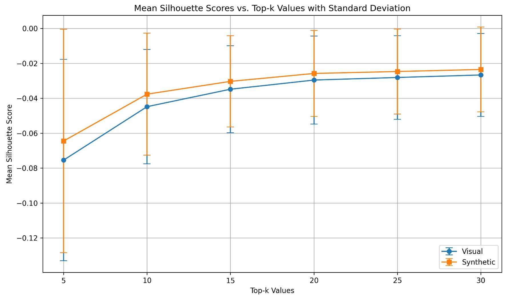
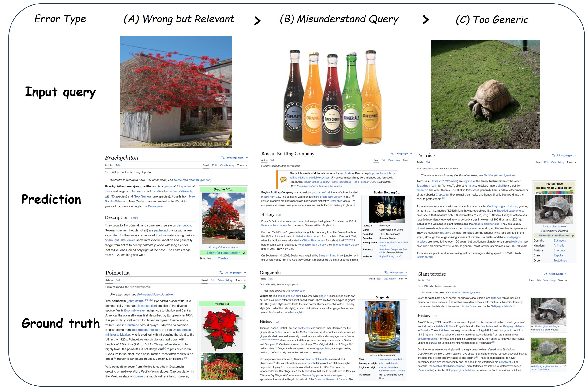

Abstract
Open-domain visual entity recognition (VER) seeks to associate images with entities in encyclopedic knowledge bases such as Wikipedia. Recent generative methods tailored for VER demonstrate strong performance but incur high computational costs, limiting their scalability and practical deployment. In this work, we revisit the contrastive paradigm for VER and introduce WikiCLIP, a simple yet effective framework that establishes a strong and efficient baseline for open-domain VER. WikiCLIP leverages large language model embeddings as knowledge-rich entity representations and enhances them with a Vision-Guided Knowledge Adaptor (VGKA) that aligns textual semantics with visual cues at the patch level. To further encourage fine-grained discrimination, a Hard Negative Synthesis Mechanism generates visually similar but semantically distinct negatives during training. Experimental results on popular open-domain VER benchmarks, such as OVEN, demonstrate that WikiCLIP significantly outperforms strong baselines. Specifically, WikiCLIP achieves a 16% improvement on the challenging OVEN unseen set, while reducing inference latency by nearly 100× compared with the leading generative model, AutoVER.
Introduction
Open-domain Visual Entity Recognition (VER) aims to identify specific named entities appearing in an image, where the entity space is drawn from encyclopedic knowledge sources such as Wikipedia. VER serves as a critical component in various real-world applications, including information-seeking Visual Question Answering (VQA), animal species recognition, and news content understanding. Despite rapid advances in multimodal large language models (MLLMs), recent studies reveal that VER remains highly challenging—it demands reasoning over fine-grained encyclopedic knowledge and recognizing entities across an extremely large and long-tailed category space, often encompassing millions of candidates.
Recent works on open-domain VER suggest that generative paradigms—which translate query images into text and then perform text-based entity matching against encyclopedic sources—currently outperform contrastive approaches. However, generative methods suffer from several critical limitations:
⏱️ High Inference Latency
Autoregressive decoding requires sequential token generation, causing significant computational overhead compared to parallelizable contrastive encoders.
🔍 Limited Generalization
Generative VER models often fail to recognize entities not observed during VER training, limiting their open-domain applicability.
💰 High Computational Cost
They typically rely on massive architectures (e.g., AutoVER 13B) and large-scale paired datasets (e.g., REW-47M image–text pairs).
In this work, we revisit the contrastive paradigm for VER and argue that it remains a powerful yet underexplored alternative. Our key insight is that LLM embeddings can encode rich encyclopedic semantics when provided with textual descriptions. By guiding these representations with fine-grained visual cues, we can extract discriminative, entity-level embeddings through lightweight contrastive training. WikiCLIP thus combines the generalization ability of LLM-based representations with the efficiency and scalability of contrastive learning.
Motivation

Performance comparison. WikiCLIP delivers state-of-the-art OVEN unseen accuracy while maintaining low inference latency.

Contrastive retrieval offers a practical and efficient alternative for open-domain VER.
Generative VER pipelines are accurate but costly. When deployed as intermediate modules within larger pipelines, they can cause slow inference, reduced adaptability, and cumulative error propagation in downstream tasks. WikiCLIP revisits contrastive retrieval with knowledge-rich entity embeddings and vision-guided filtering to achieve a strong efficiency–accuracy tradeoff: 14.49 ms vs. 1569 ms when compared with AutoVER (13B), a nearly 100× speedup.
Method

The Overall Pipeline of WikiCLIP. Given an entity's Wikipedia document, we use CLIP to extract patch-level features from the entity image and an LLM to obtain embeddings of its encyclopedic text description. The Vision-Guided Knowledge Adaptor selects informative text tokens guided by visual features to produce a knowledge-aware entity representation. Hard negative synthesis generates challenging negatives by swapping entity text descriptions.
🔬 Vision-Guided Knowledge Adaptor (VGKA)
WikiCLIP employs a dual-encoder architecture consisting of a frozen CLIP image encoder for query images and a trainable entity encoder incorporating the VGKA module.
The VGKA uses CLIP to extract patch-level visual features Pe ∈ ℝNp×D from entity images, serving as visual guidance. An LLM encodes the entity's textual description into token-level embeddings, which are linearly projected to match the visual feature dimension, yielding Tt ∈ ℝNt×D.
A multi-head cross-attention operation then selects discriminative text information guided by visual features: V' = FA(Pe, Tt, Tt), followed by mean pooling to obtain the final entity embedding v ∈ ℝD. This allows the model to focus on entity-relevant semantics within lengthy texts while suppressing irrelevant information.
⚡ Hard Negative Synthesis
To improve fine-grained entity discrimination, we introduce a hard negative synthesis strategy that creates visually similar yet semantically mismatched negatives.
Step 1 — Visual Clustering: We leverage CLIP visual features to construct mini-batches where query images are visually similar, grouping entities that share visual appearance.
Step 2 — Text Swapping: For each sample in the visually clustered batch, we generate Nsync synthetic entities composed of the original entity image paired with randomly selected textual descriptions from other entities in the mini-batch.
These synthetic hard negatives selectively replace easy negatives (those with low cosine similarity to the query), forcing the model to capture fine-grained textual distinctions that define entity identity. Only when both steps are combined does the model learn effective fine-grained discrimination.
Efficient Inference: All entity embeddings in the knowledge base can be precomputed and stored offline. At inference time, recognition requires only a single forward pass through the CLIP image encoder and a FAISS similarity search—unlike generative approaches that rely on expensive autoregressive decoding. This yields an inference latency of just 14.49 ms per query.
Main Results on OVEN
WikiCLIP achieves 31.6 HM on OVEN — nearly 3× the previous contrastive SOTA (CLIP2CLIP, 11.5) — and surpasses GiT-Large trained on REW-47M with only 1/5 of the tunable parameters.
| Category | Methods | Extra Dataset | Latency | TFLOPS | Unseen | Seen | HM |
|---|---|---|---|---|---|---|---|
| Zero Shot | |||||||
| Zero Shot | GPT5-nano | — | — | — | 13.0 | 23.7 | 16.8 |
| GPT4V | — | — | — | 19.3 | 29.8 | 23.4 | |
| Generative | |||||||
| Generative | PaLI-3B | — | — | — | 6.6 | 21.6 | 10.1 |
| PaLI-17B | — | — | — | 12.4 | 30.6 | 17.6 | |
| GiT-Large* | WebLI-100M | 83.95 | 3.06 | 4.2 | 13.7 | 6.5 | |
| GER-ALD* | Entity-WebLI | 83.95 | 3.06 | 17.7 | 31.5 | 22.7 | |
| GiT-Large* | Entity-WebLI | 83.95 | 3.06 | 16.4 | 25.9 | 20.1 | |
| GiT-Large* | REW-47M | 83.95 | 3.06 | 25.1 | 36.0 | 29.6 | |
| AutoVER 7B | — | 993 | 19.47 | 21.7 | 61.5 | 32.1 | |
| AutoVER 13B | — | 1569 | 24.74 | 24.5 | 63.6 | 35.6 | |
| Contrastive | |||||||
| Contrastive | CLIP ViTL14 | — | 11.69 | 0.07 | 5.4 | 5.3 | 5.4 |
| CLIPFusion | — | 15.93 | 0.08 | 4.8 | 33.6 | 8.4 | |
| CLIP2CLIP | — | 13.84 | 0.08 | 10.5 | 12.6 | 11.5 | |
| WikiCLIP-S | — | 14.49 | 1.93 | 27.0 | 36.8 | 31.1 | |
| WikiCLIP-L | — | 14.49 | 1.93 | 28.5 | 35.5 | 31.6 | |
Table 1. Comparison with State-of-the-Art on the OVEN Entity Set. * denotes test-split results. Latency measured on A100.
Generalization on E-VQA & INFOSEEK
WikiCLIP achieves SOTA on INFOSEEK without fine-tuning on its training set, and competitive results on E-VQA compared to Echosight (which is explicitly fine-tuned).
| INFOSEEK | ||||
|---|---|---|---|---|
| Methods | FT | Unseen | Seen | Overall |
| DPR | In-house | — | — | 29.6 |
| CLIP I2T* | — | — | — | 32.0 |
| CLIP I2I* | — | 45.6 | 46.5 | 45.9 |
| Echosight | E-VQA | — | — | 53.2 |
| WikiCLIP-S | OVEN | 58.5 | 69.3 | 61.2 |
| WikiCLIP-L | OVEN | 60.3 | 69.6 | 62.7 |
| E-VQA | ||||
|---|---|---|---|---|
| Methods | FT | Unseen | Seen | Overall |
| CLIP I2T* | — | — | — | 3.3 |
| CLIP I2I* | — | 14.6 | 10.6 | 13.3 |
| Echosight | E-VQA | — | — | 36.5 |
| Google Lens | — | — | — | 47.4 |
| WikiCLIP-S | OVEN | 27.7 | 39.9 | 30.7 |
| WikiCLIP-L | OVEN | 30.7 | 35.6 | 31.9 |
Efficiency Comparison
- Only 0.08B tunable parameters — no gradients through frozen LLM/CLIP.
- WikiCLIP-L: 23 h on 8×A100 vs. AutoVER 13B: 247 h.
- Trained on 1.9M samples, outperforms GiT-Large trained on 47M samples.
- Inference: 14.49 ms vs. 1569 ms (AutoVER 13B), 108× faster.
| Method | Params | Train Time | Latency |
|---|---|---|---|
| AutoVER 13B | 13B | 247 h | 1569 ms |
| GiT-Large (REW) | 0.4B | — | 83.95 ms |
| WikiCLIP-S | 0.08B | 19 h | 14.49 ms |
| WikiCLIP-L | 0.08B | 23 h | 14.49 ms |
Ablation Study
Entity Representation & Training Strategy
| Image | Text | Cluster | Synth | Unseen | Seen | Overall |
|---|---|---|---|---|---|---|
| Entity Representation | ||||||
| ✓ | 39.5 | 60.4 | 44.8 | |||
| ✓ | 47.9 | 59.1 | 50.8 | |||
| ✓ | ✓ | 56.8 | 68.0 | 59.7 | ||
| Training Strategy | ||||||
| ✓ | ✓ | ✓ | 56.8 | 68.2 | 59.7 | |
| ✓ | ✓ | ✓ | 57.0 | 64.6 | 58.9 | |
| ✓ | ✓ | ✓ | ✓ | 58.5 | 69.3 | 61.2 |
Choice of Encoders
| Text Encoder | Visual Encoder | Unseen | Seen | Overall |
|---|---|---|---|---|
| EVA-CLIP 8B | CLIP ViTL | 26.5 | 54.6 | 33.6 |
| LLaMa3.2 1B | CLIP ViTL | 39.8 | 46.9 | 41.6 |
| EVA-CLIP 8B | EVA-CLIP 8B | 56.3 | 62.4 | 58.1 |
| LLaMa3.2 1B | EVA-CLIP 8B | 58.5 | 69.3 | 61.2 |
LLM text encoders outperform CLIP text encoders due to richer world knowledge and longer context support.
Analysis & Discussion
📏 Wiki Text Length

Performance peaks at 256 tokens. Excessive text introduces noise — not all Wikipedia text benefits recognition.
📊 LLM Scale Effect

Scaling LLMs improves unseen accuracy, but gains between 3B and 8B are marginal.
🎯 Seen Category Ratio

WikiCLIP achieves 56% unseen acc with only 700 seen entities (10%), vs. 58% with full 7,943.
Visualization
Vision-Guided Knowledge Selection
We visualize the attention map of each text token guided by patch-level vision signals. The top-32 text segments with highest attention are highlighted, showing that the VGKA successfully detects discriminative entity features.

Vision-guided attention highlights entity-discriminative text tokens.

Visual cues guide selective knowledge extraction from lengthy descriptions.

Fine-grained alignment between visual patches and text tokens.
Top-K Retrieval Results
Qualitative top-5 retrieval results show WikiCLIP successfully resolves visually ambiguous cases by leveraging textual descriptions for precise entity recognition.

Top-5 Retrieval Visualization. WikiCLIP retrieves the correct entity even among visually similar candidates.
Hard Negative Visualization
We visualize entity representations with and without hard negative synthesis using t-SNE. Hard negative synthesis leads to more sparse and discriminative representations, confirmed by higher Silhouette Scores.


Hard Negative Visualization. (Left) t-SNE of entity representations. (Right) Silhouette score comparison.
Error Case Analysis
We identify three main failure types: (1) Wrong but Relevant — predicted entity is semantically related but incorrect; (2) Unrelated Ground Truth — GT entity not directly present in the image; (3) Granularity Mismatch — prediction at incorrect specificity level.

Error Case Visualization. Three main types of prediction errors on OVEN.
BibTeX
@inproceedings{wikiclip2026,
title={WikiCLIP: An Efficient Contrastive Baseline for Open-domain Visual Entity Recognition},
author={Ning, Shan and Qiu, Longtian and Sun, Jiaxuan and He, Xuming},
booktitle={IEEE/CVF Conference on Computer Vision and Pattern Recognition},
year={2026}
}